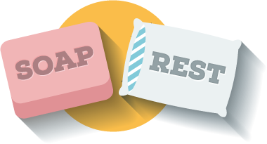
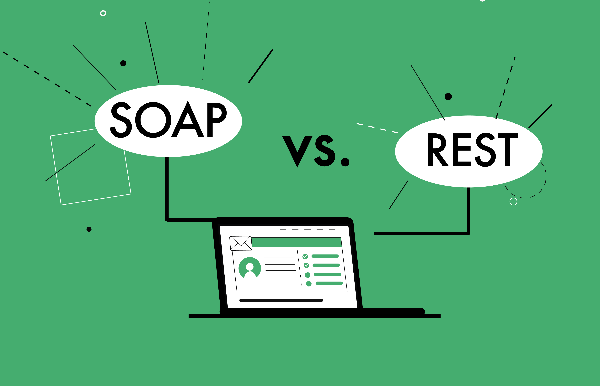

University project
REST works through a single, serial interface to access named resources. It is most often used when exposing a public API over the Internet. SOAP, on the other hand, exposes the components of application logic as services, not as data.
The REST and SOAP project includes what REST and SOAP are and what their purpose is. Examples, characteristics and differences between them are included.
For more information about my project, you can view it with the link below in a PDF file.
SOAP & REST